📐 EAC - Estudos de Aprendizagem Contínua - $3^\circ$ Trimestre
📐 GEOMETRIA
1️⃣ Contando Vértices, Faces e Arestas
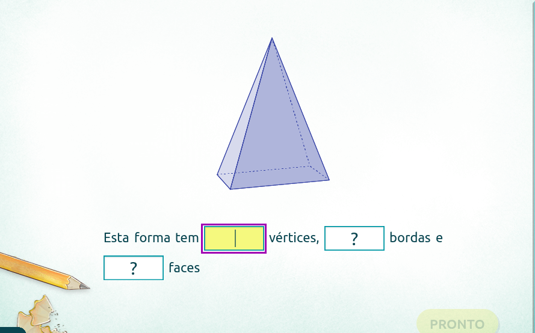Aprenda a contar os vértices, faces e arestas de figuras espaciais.
Jogar3️⃣ Medindo Volume com Cubos Unitários
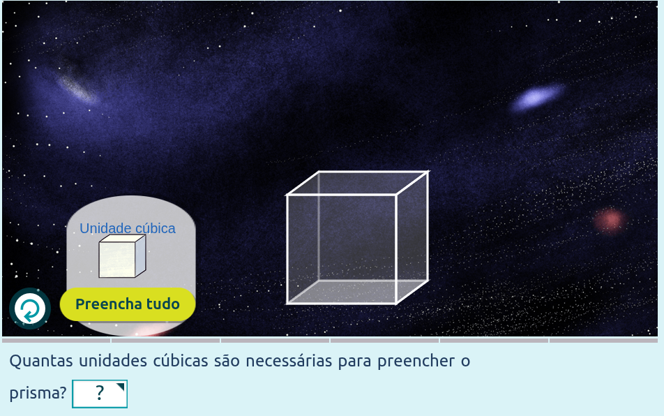Aprenda a calcular o volume de prismas retangulares contando cubos unitários. Ótimo para a prática de conceitos de geometria espacial.
Jogar4️⃣ Contagem de Cubos Tridimensionais
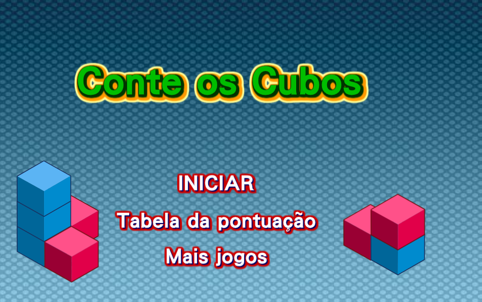Desafie-se a contar a quantidade total de cubos em estruturas tridimensionais complexas. Perfeito para desenvolver a percepção espacial.
Jogar5️⃣ Teste de Geometria
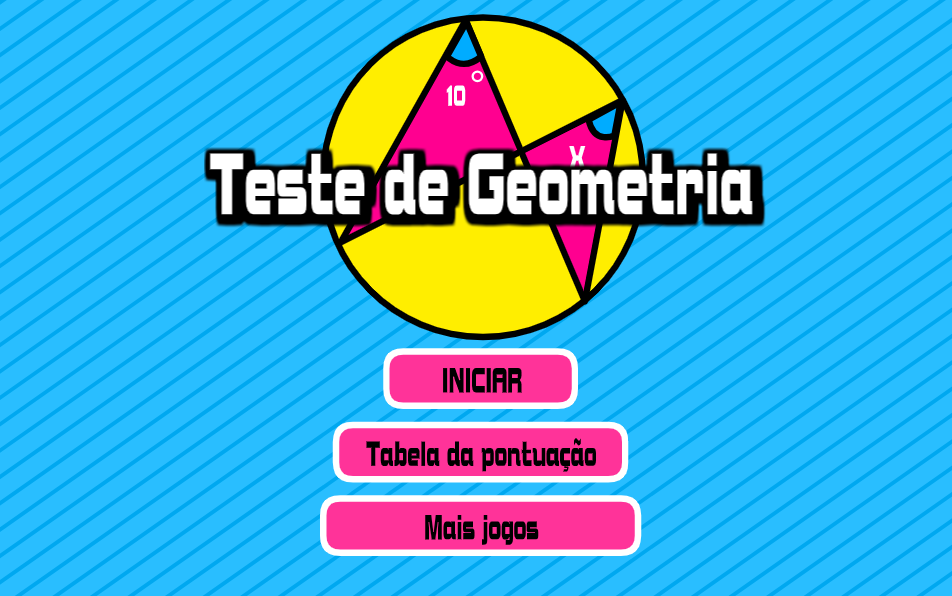Coloque seus conhecimentos de geometria à prova com este teste rápido e interativo. Inclui vários tópicos de formas e figuras.
Jogar6️⃣ Visão Espacial
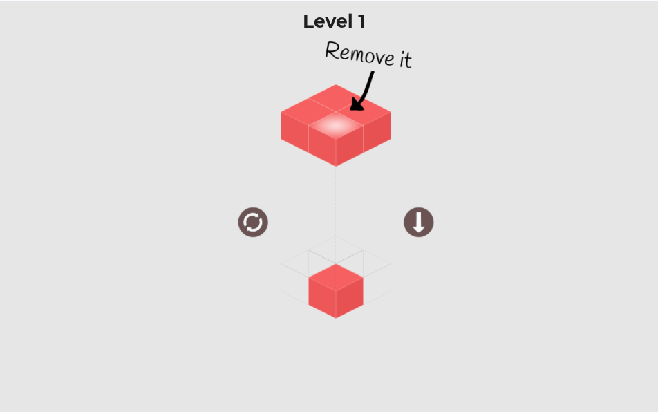Um quebra-cabeça desafiador que exige que você gire e encaixe blocos para preencher formas. Excelente para melhorar a visualização 3D.
Jogar🔢 ESTATÍSTICA
9️⃣ Math Parking Average
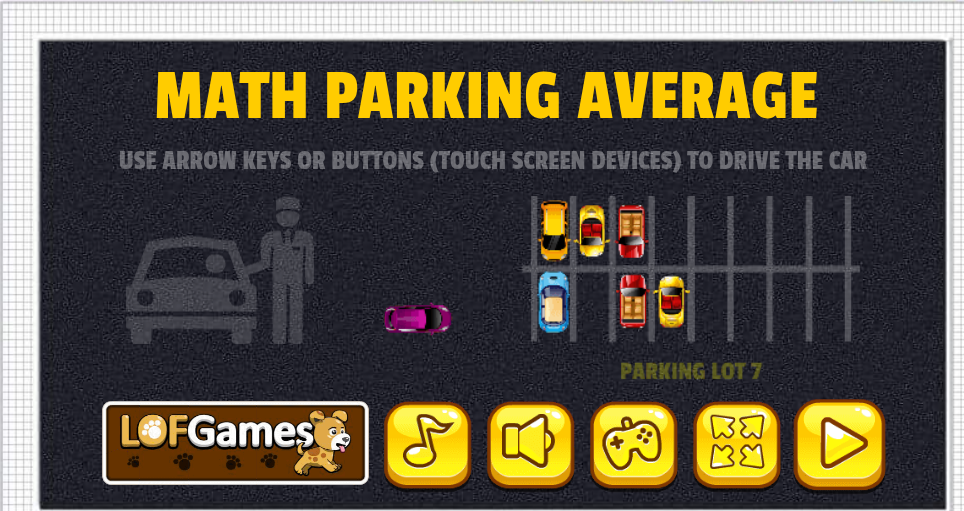Um jogo divertido que combina dirigir e matemática. O objetivo é manobrar o carro e estacioná-lo nas vagas corretas, que geralmente envolvem a resolução de problemas de média, adição ou subtração para encontrar o número da vaga correta. Use as setas para dirigir e complete os desafios matemáticos para liberar os estacionamentos.
Jogar1️⃣0️⃣ Gráfico de Barras
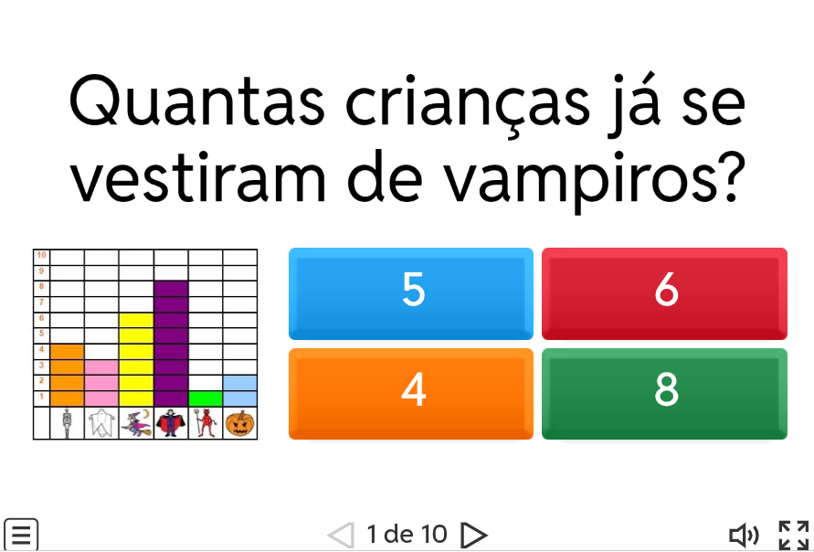Teste suas habilidades em estatística e análise visual! Neste jogo de quiz, você deve interpretar gráficos de barras para responder perguntas rápidas sobre dados e frequências. Localize a informação correta na coluna do gráfico e aprimore sua leitura de dados de forma divertida e interativa.
Jogar1️⃣1️⃣ Média, Moda e Mediana

Aprenda e pratique os quatro pilares da estatística: Média (Mean), Mediana (Median), Moda (Mode) e Amplitude (Range). Neste jogo interativo, o primeiro passo é organizar a sequência numérica em ordem crescente para, em seguida, calcular e identificar corretamente cada um dos conceitos estatísticos.
Jogar1️⃣2️⃣ Aquecimento Ligado
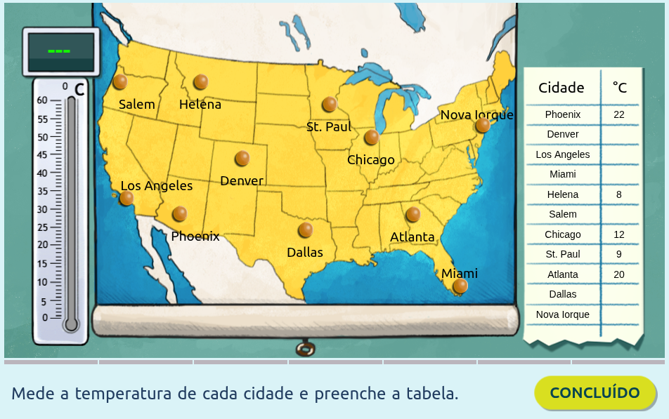Este jogo de estatística e geografia desafia você a coletar dados de temperatura em diversas cidades americanas. Você deve ler corretamente o termômetro para registrar a temperatura de cada cidade no mapa e, em seguida, preencher a tabela de dados. Uma excelente forma de praticar a leitura de instrumentos e a organização de informações estatísticas!
Jogar1️⃣3️⃣ Estatística não Mente
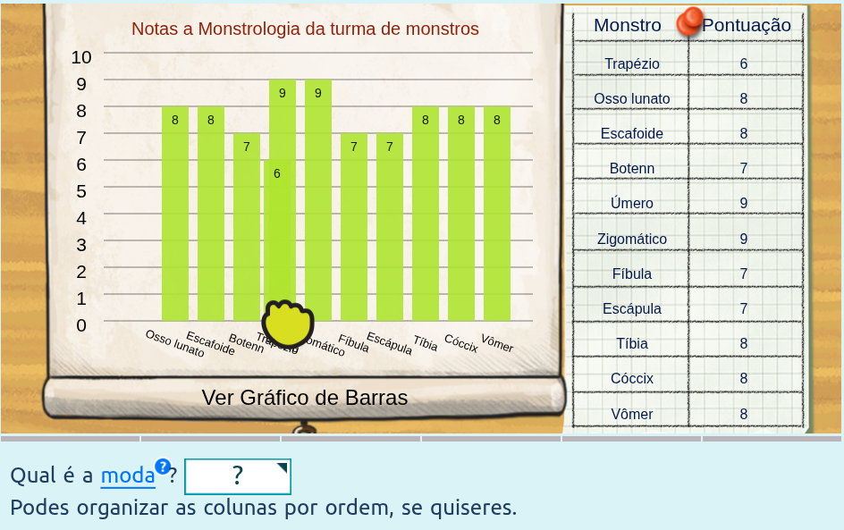Neste jogo, seu desafio é calcular a Moda (o valor que mais se repete) de um conjunto de dados de pontuação de 'Monstros'. Analise a tabela, identifique a pontuação que aparece com maior frequência entre os itens listados e use a opção de organizar as colunas para facilitar a sua contagem e resposta.
Jogar1️⃣4️⃣ Problemas de Estatística
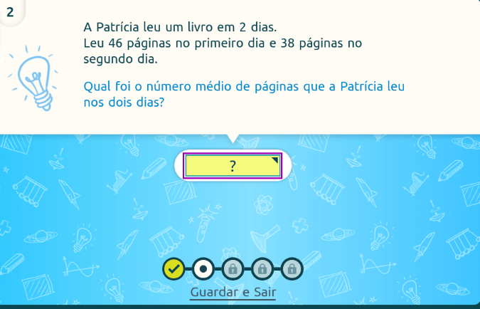Resolva um problema de matemática do cotidiano praticando o cálculo da média aritmética. O desafio é determinar o número médio de páginas lidas por dia. Você deve somar as páginas lidas e dividir o total pelo número de dias para encontrar a resposta e inseri-la no campo.
Jogar🔢 PROBABILIDADE
1️⃣5️⃣ Rodas Giratórias
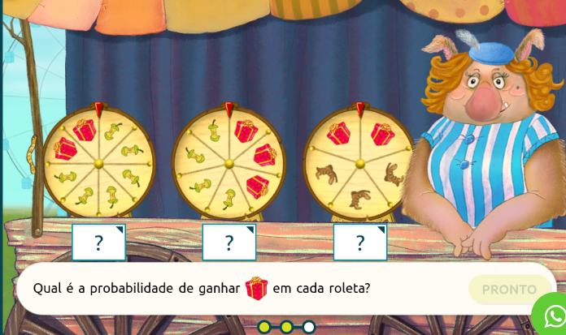Neste jogo educativo da Matific, o aluno pratica o cálculo de probabilidades usando um modelo visual com três rodas giratórias (roletas). O objetivo é determinar a fração que representa a probabilidade de ganhar um prêmio específico (neste caso, o presente $\text{🎁}$) em cada roleta, analisando a distribuição dos itens. É um exercício interativo focado em frações e conceitos básicos de chance.
Jogar1️⃣6️⃣ Probabilidade Condicional
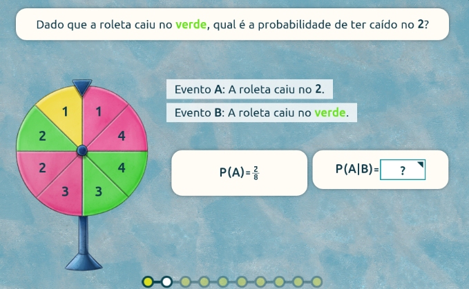O jogo desafia o estudante a calcular a probabilidade de a roleta ter caído no número 2 (Evento A) dado que ela caiu na cor verde (Evento B), e a partir disso, determinar se os eventos são dependentes ou independentes.
Jogar1️⃣7️⃣ Uma Chance Igual
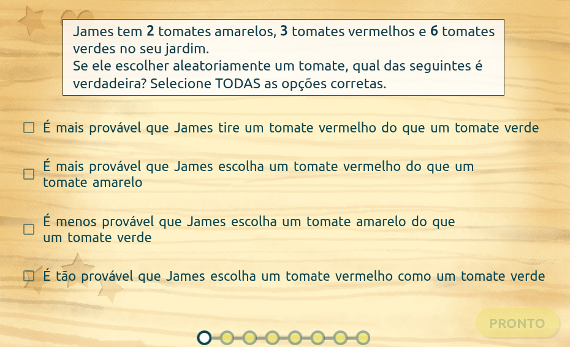Esta é uma atividade de probabilidade básica que testa a capacidade do aluno de comparar a chance de diferentes eventos. O cenário envolve escolher aleatoriamente um tomate (2 amarelos, 3 vermelhos e 5 verdes) e o desafio é selecionar as afirmações verdadeiras sobre quais cores de tomate são mais, menos ou igualmente prováveis de serem escolhidas. O foco é na compreensão e comparação de probabilidades baseadas na contagem de resultados.
Jogar🔢 PFC - CONTAGEM
1️⃣8️⃣ Contagem de Massas
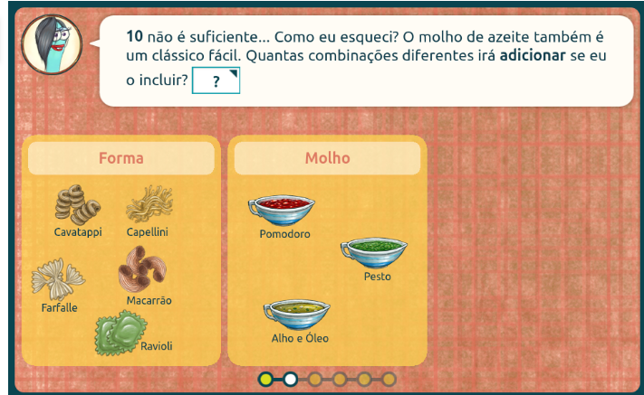É uma atividade interativa de matemática, "Contagem de massas", que ensina o princípio multiplicativo para formar combinações.O jogo desafia o usuário a calcular o total de combinações possíveis ao escolher uma Forma de massa e um tipo de Molho. O jogador deve multiplicar as opções para encontrar a resposta e praticar a fluência em contagem combinatória.
Jogar1️⃣9️⃣ Escolha uma senha
O jogo é o início de uma atividade educacional que introduz o tema de contagem combinatória e probabilidade. O desafio inicial é determinar o número de senhas de login possíveis para um computador novo, um problema que será detalhado nas telas seguintes para o jogador resolver usando o princípio multiplicativo.
Jogar⚔️🛡️ RPG 🏹 🗡️
2️⃣1️⃣ Minicraft

Aventure-se no mundo de Minicraft, onde tudo é construído com blocos! Neste jogo, você aprende na prática o conceito de volume ao empilhar e organizar blocos cúbicos e retangulares. Entenda como o comprimento, a largura e a altura se combinam para formar paralelepípedos e cubos. Use os blocos para visualizar e calcular o volume ($V = a \cdot b \cdot c$) e descubra o espaço ocupado por cada construção que você cria!
Jogar